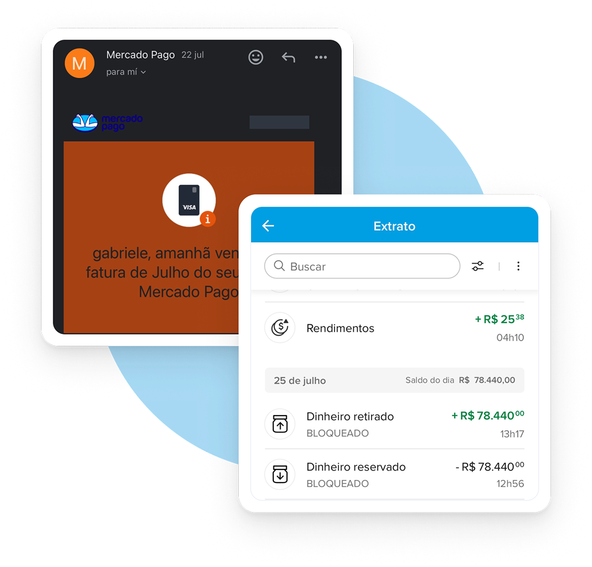

Contexto
Problema
&
A retenção de saldo é crítica em contas digitais. No Mercado Pago, faltavam previsibilidade e clareza sobre motivos, prazos e impactos, o que gerava volume alto de chamados, desconfiança e até processos judiciais. O desafio era comunicar com empatia, explicar as regras e reduzir atrito sem comprometer segurança. Correntistas recebiam aviso de retenção total e eram instruídos a contatar o suporte, sem prazo definido de liberação — um gatilho de estresse especialmente para quem depende da maquininha para renda diária.